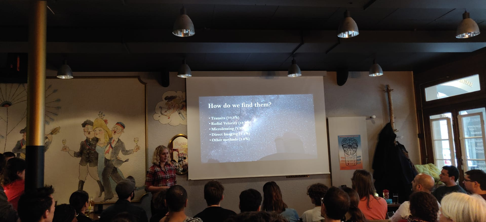

Chloe Fisher
PhD Student at the University of Bern
working on Exoplanet Atmospheres.
Recent Projects
Non-LTE Analysis of Sodium
We investigated the effects of dropping the LTE assumption for sodium on high- and low-res data, and explored the differences in the atmospheric retrieval results.
Supervised Machine Learning for Atmospheric Retrieval
I am working on developing an atmospheric retrieval code using machine learning. We are currently using "Random Forests" to analyse spectra and inform us about the chemical composition, temperature and clouds in the planet's atmosphere.
Retrieval Analysis of WFC3 Data
We studied a population of planets with WFC3 data to look for trends in their properties and investigate issues with the current techniques used to examine transmission spectra.
Research
I am working on developing atmospheric retrieval methods involving machine learning techniques for extrasolar planets. I also work on different aspects of the theory of transimission spectra, and analysing traditional methods of retrieval.
First Author Papers
Fisher, C., & Heng, K. 2019, ApJ, 881, 25
How much information does the sodium doublet encode?
Retrieval analysis of Non-LTE sodium lines at low and high spectral resolutions
Fisher, C., & Heng, K. 2018, MNRAS, 481, 4698
Retrieval analysis of 38 WFC3 transmission spectra and resolution of the normalization
degeneracy
Other Papers
Hoeijmakers, H. J., et al. 2019, A&A, 627, A165
A spectral survey of an ultra-hot Jupiter: Detection of metals in the transmission spectrum
of KELT-9b
Seidel, J. V., et al. 2019, A&A, 623, A166
Hot Exoplanet Atmospheres Resolved with Transit Spectroscopy (HEARTS) - II. A broadened sodium
feature on the ultra-hot giant WASP-76b
Márquez-Neila, P., Fisher, C., Sznitman, R., & Heng, K. 2018,
Nature Astronomy, 2, 719
Supervised machine learning for analysing spectra of exoplanetary atmospheres
Codes
Our random forest retrieval code HELA, along with all the Exoclimes Simulation Platform open-source codes, can be found on our github page.
About Me
I am a PhD student at the University of Bern in Switzerland. I am working in the group of Kevin Heng at the Centre for Space and Habitability. We study the atmospheres of extrasolar planets to try to determine their composition and climate. Born in the UK, I did my undergraduate degree in mathematics at the University of Cambridge, followed by a master's in Astrophysics. In August, 2017 I joined Kevin's group in Bern.

The University of Bern International Relations department have made a short video about my research and what life in Bern is like for international students. Click below to watch it.
Contact

University of Bern
Centre for Space and Habitability (CSH)
Gesellschaftsstrasse 6 (G6)
3012 Bern
Switzerland